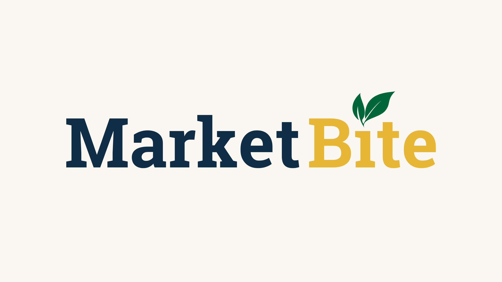

Less unsold food.
Help cafes sell appropriate surplus before their approved selling window ends. Track sales, retained stock, transfers, and discards separately.

Good food deserves a second look.
So does its price.
MarketBite turns surplus food into better deals for students. Cafes can adjust prices throughout the day, helping more meals get sold and less food go to waste.
An unsold sandwich represents more than the food in the case. Growing its ingredients takes land and water; preparing, refrigerating, and delivering it takes energy and people’s work. When food goes uneaten, those resources have already been used.
Much of food waste’s climate impact happens before disposal, through production, processing, and transport. Preventing waste can protect the value of those resources. Why food waste matters
MarketBite starts with a practical campus opportunity: connect surplus inventory to timely, responsible price drops so more prepared food finds a buyer. Our goal is less unsold food and more affordable meals. A future pilot would compare unsold quantities and discarded food against a baseline, alongside student savings and cafe revenue.
Help cafes sell appropriate surplus before their approved selling window ends. Track sales, retained stock, transfers, and discards separately.
Show the price, the saving, and what’s available. Keep minimum prices and protected stock under the cafe’s control.
Evaluate waste reduction first. Add water and carbon estimates only with a documented method and a credible comparison.
MarketBite is our entry in the Ain Center’s The Heist Hackathon, in the Sustainability track. The challenge brings students across business, engineering, and the arts and sciences together to turn an idea into a prototype and a venture pitch over ten days.
We’re tackling the Sustainability and Food problem: reducing food waste and the cost, water, and carbon tied to it. Connections Cafe is the setting for our prototype, linking inventory, a cafe display, and a mobile menu through the same pricing model.
The Ain Center for Entrepreneurship and Innovation helps people turn ideas into ventures that create economic or social value. Its hands-on programs, mentoring, competitions, and connections help students explore opportunities and develop their ideas.
Drag to replay the saved opening plan at any time; manual changes are rebuilt. 12 foods per page · rotates every 15 seconds · savings from regular price · charts show the displayed batch only · shares this browser’s Cafe Desk simulation
Play the day, bring in a rush, or launch an offer. The case and menus update together.
Confirmed prices update every menu. Demand is simulated.
Start rush moves the clock to your chosen time and begins playback. Each customer attempts to buy one available item. Moving backward rebuilds the day from your saved opening plan. Rushes run within your cafe hours.
Help prepared food find a buyer while making campus meals more affordable. Start with what is in the case, and make every decision count.
Timely offers can connect unsold food with people who want it. Inventory and approved selling windows guide what reaches the menu.
Food carries the water, land, energy, and work used to grow, prepare, and deliver it. Preventing waste keeps more of that effort serving its purpose.
Clear savings help students find a meal within reach. Cafe-set minimum prices keep the business side of the decision in view.
These counts follow the same day as the case and menus.
A discounted sale is a sale of surplus stock. Retained food stays in the closing ledger; it is not automatically counted as waste prevented. Transfers and discards are tracked separately.
Compare unsold quantities and weighed food waste before and during a pilot, accounting for how much food the cafe prepared. Track student savings, cafe revenue, and where remaining food goes.
Water and carbon estimates would need a documented method, product-specific data, and a credible baseline. The demo does not turn each sale into an assumed carbon saving.
Explore the resources behind our approach ↗Enter what you have. Set your prices. The case and menus follow.
Starting a day? Enter opening quantities and regular prices below, then start the day. Already running? Receive a fresh batch or review the existing stock further down. All views update together in this browser.
Hours apply to the simulation and both menus. Applying them starts a new demo day with your saved inventory plan.
These values are your next opening plan. Starting a day replaces the current simulated run. Minimum price is the lowest you permit; cost is the incremental cost of making a sale.
A fresh batch keeps the existing stock and its price history intact.
Choose a batch and check its offer. Preview and publish the next price adjustment to every screen. A hold keeps the current price. Prices update every 30 simulated minutes and can rise as purchases reduce stock. Newly received food is a separate batch.
Evaluate to inspect stock pressure, time, and the next price. No recommendation changes the screen before acknowledgment.
These are explicit prototype assumptions, not validated cafe economics or demand. Selling fee 0%; incremental sale cost $0.20; fixed-order fee $0; activation cost $0.25; minimum contribution $0.25. No real checkout is connected.
Prices update every 30 simulated minutes, with up to 45% off regular price and a 5% adjustment limit. Purchases affect the next scheduled evaluation. The floor covers fees, incremental cost and required contribution. Prices never exceed regular price; offers withdraw five minutes before closing.
Build a food pairing, review bakery surplus, or run a last-call review. Price drops still need to pass the pricing checks. A pairing adds its two confirmed item prices; it does not create an extra discount.
735 Library Rd. · University of Rochester
Follow price drops as they happen. These on-screen alerts follow the same cafe day as your menu.
Press Play above to follow the day, or move the time slider to explore changing offers. Use Price drops to compare the current price, regular price, and available stock.